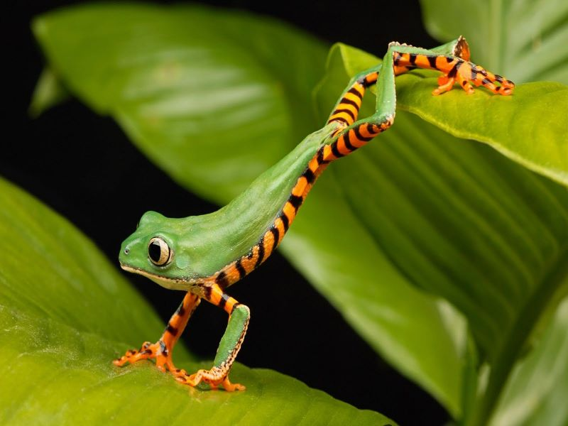

The website features photographs of animals from Pixabay.com The key to animal photography is patience.It can take a long time to get the right lighting and the best view of the animal. When photographing animals, you do not have a lot of control...yuo need to wait for them.

